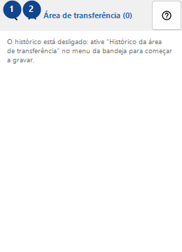
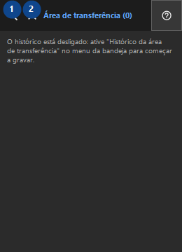

Área de transferência
Para que serve
O histórico é armazenado apenas localmente e criptografado com o Windows DPAPI para a sua conta.


Ordem de utilização
Leia as explicações numeradas, escolha os valores necessários e continue com o comando da janela.
Elementos
1. Pesquisar no histórico
Use este comando para a ação indicada. Leia qualquer confirmação antes de aceitar.
Os seus atalhos2. Fechar
Use este comando para a ação indicada. Leia qualquer confirmação antes de aceitar.
Os seus atalhos